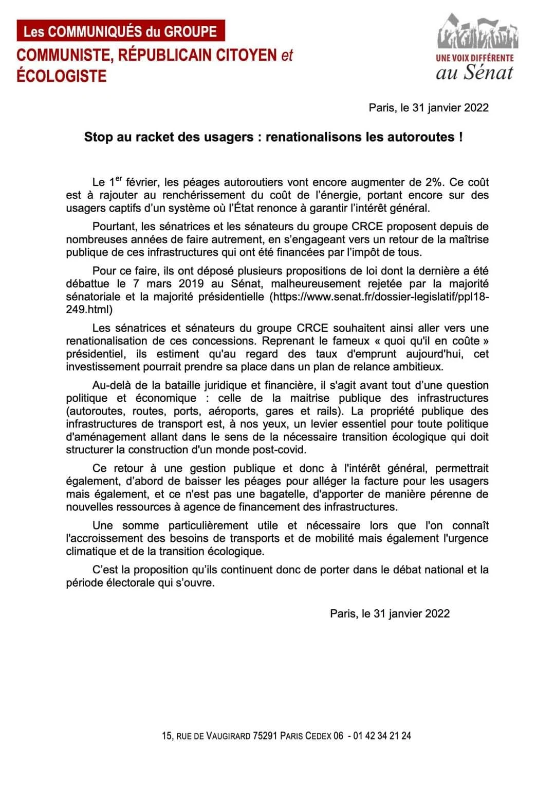

Publication d’archives
Stop au racket des usagers : renationalisons les autoroutes !
Date indiquée par Facebook · 2 février 2022
Texte conservé avec la publication
Contexte du dossier
Le 2 février 2022, la revendication de renationalisation des autoroutes ramène la même question sur la route : à qui revient l’argent des usagers ? Le message du 13 octobre demande un grand service public de l’énergie ; celui du 21 novembre place le « défi énergétique » dans le débat communiste. Ces légendes ne restituent pas l’argumentaire des images jointes. Leur contenu lisible permet toutefois de suivre une orientation commune : la puissance publique doit organiser des infrastructures indispensables à la vie quotidienne, au lieu de laisser le paiement des besoins essentiels alimenter des rentes.

Sources
Archive rouge · export Facebook · AR-0002-FB-01976
À lire aussi · Énergie : les sénateurs LR et macronistes refusent un soutien fort aux collectivités et à leur population.